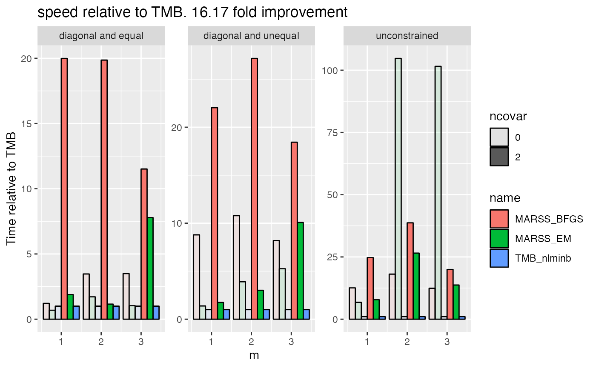

Here are speed and estimate comparisons of EM, BFGS with the Kalmon filter (no gradient functions), TMB and Tim Clines original code.
Example data
library(MARSS)
library(dplyr)
#>
#> Attaching package: 'dplyr'
#> The following objects are masked from 'package:stats':
#>
#> filter, lag
#> The following objects are masked from 'package:base':
#>
#> intersect, setdiff, setequal, union
data(lakeWAplankton, package = "MARSS")
phytoplankton <- c("Cryptomonas", "Diatoms", "Greens", "Unicells", "Other.algae")
dat <- as.data.frame(lakeWAplanktonTrans) |>
subset(Year >= 1980 & Year <= 1989) |>
subset(select=phytoplankton) |>
t() |>
MARSS::zscore()Fit models without covariates
R <- "unconstrained"
mod.list <- list(R=R, m=1, tinitx=1)Fit with MARSS with EM or optim and BFGS.
m1 <- MARSS(dat, model=mod.list, form='dfa', z.score=FALSE, silent = TRUE)
m2 <- MARSS(dat, model=mod.list, form='dfa', z.score=FALSE, silent = TRUE, method="BFGS")Fit with TMB.
library(marssTMB)
m3 <- dfaTMB(dat, model=list(m=1, R=R))
m4 <- MARSS(dat, model=mod.list, form='dfa', method="TMB", silent=TRUE)
m5 <- MARSS(dat, model=mod.list, method="BFGS_TMB", form='dfa', silent=TRUE)Add example with covariates
For form="dfa", pass in covariates with
covariates=xyz. If using the default model form (not dfa),
then pass in covariates with model$d or
model$c.
Fit model
# use a simpler R
R <- "diagonal and unequal"
mod.list2 <- list(m=3, R=R, tinitx=1)
# add a temperature covariate
temp <- as.data.frame(lakeWAplanktonTrans) |>
subset(Year >= 1980 & Year <= 1989) |>
subset(select=Temp)
covar <- t(temp) |> zscore()
m <- MARSS(dat, model=mod.list2, form="dfa", covariates=covar, silent = TRUE, z.score = FALSE, method="TMB", fit=FALSE)
t6 <- system.time(m6 <- marssTMB:::MARSSfit.TMB(m, fun=1))
t6c <- system.time(m6c <- marssTMB:::MARSSfit.TMB(m, fun=2))
t7 <- system.time(m7 <- MARSS(dat, model=mod.list2, form="dfa", covariates=covar, silent = TRUE, control=list(maxit=10000), z.score = FALSE))
t6b <- system.time(m6b <- dfaTMB(dat, model=list(m=3, R=R),
EstCovar = TRUE, Covars = covar))Add a 2nd covariate
TP <- as.data.frame(lakeWAplanktonTrans) |>
subset(Year >= 1980 & Year <= 1989) |>
subset(select=TP)
covar <- rbind(covar, t(TP)) |> zscore()
m <- MARSS(dat, model=mod.list2, form="dfa", covariates=covar, silent = TRUE, z.score=FALSE, method="TMB", fit=FALSE)
t8 <- system.time(m8 <- marssTMB:::MARSSfit.TMB(m, fun=1))
t8c <- system.time(m8c <- marssTMB:::MARSSfit.TMB(m, fun=2))
t9 <- system.time(m9 <- MARSS(dat, model=mod.list2, form="dfa", covariates=covar, silent = TRUE, control=list(maxit=10000), z.score=FALSE))
t8b <- system.time(m8b <- dfaTMB(dat, model=list(m=3, R=R),
EstCovar = TRUE, Covars = covar))Compare time and log likelihoods
The MARSS_tmb-1 uses the splitting approach for the diag versus the chol, while tmb-2 is using just the chol. Clearly splitting is faster.
| name | num_covar | time | logLik |
|---|---|---|---|
| MARSS-EM | 1 | 5.220 | -735.6308 |
| MARSS_tmb-1 | 1 | 0.432 | -735.6308 |
| MARSS_tmb-2 | 1 | 0.748 | -735.6308 |
| dfaTMB | 1 | 0.423 | -735.6308 |
| MARSS-EM | 2 | 6.105 | -731.2380 |
| MARSS_tmb-1 | 2 | 0.564 | -731.2378 |
| MARSS_tmb-2 | 2 | 0.953 | -731.2378 |
| dfaTMB | 2 | 0.571 | -731.2378 |

More MARSS models
cat("mod <- list(Z = matrix(1, 3, 1), R = 'diagonal and equal')\n")
#> mod <- list(Z = matrix(1, 3, 1), R = 'diagonal and equal')
c(EM=fit1$logLik, BFGS=fit2$logLik, TMB=fit2$logLik)
#> EM BFGS TMB
#> 15.70271 15.70369 15.70369
cat("MARSS(dat)\n")
#> MARSS(dat)
c(EM=fit1$logLik, BFGS=fit2$logLik, TMB=fit2$logLik)
#> EM BFGS TMB
#> 17.84491 17.85200 17.85200
cat("mod <- list(Q = 'unconstrained')\n")
#> mod <- list(Q = 'unconstrained')
c(EM=fit1$logLik, BFGS=fit2$logLik, TMB=fit2$logLik)
#> EM BFGS TMB
#> 30.36813 28.13780 28.13780
cat('list(U = matrix(c("N", "S", "S")))\n')
#> list(U = matrix(c("N", "S", "S")))
c(EM=fit1$logLik, BFGS=fit2$logLik, TMB=fit2$logLik)
#> EM BFGS TMB
#> 17.48233 17.48957 17.48957Run some time comparisons
df2 <- df %>% mutate(mod = paste0(fun, "_", opt.function)) |>
select(mod, time, m, R, ncovar) %>%
pivot_wider(id_cols=c(m, R, ncovar), names_from = mod, values_from = time) |>
mutate(
MARSS_EM = MARSS_EM/TMB_nlminb,
MARSS_BFGS = MARSS_BFGS/TMB_nlminb,
TMB_nlminb = TMB_nlminb/TMB_nlminb
) |>
mutate(ncovar = as.factor(ncovar)) |>
pivot_longer(cols = 4:6)
mean.improv <- df2 |> subset(name != "TMB_nlminb") |> summarize(mean = mean(value))
ggplot(df2, aes(alpha=ncovar, fill=name, y=value, x=m)) +
geom_bar(stat="identity", position="dodge", color="black") +
facet_wrap(~R, scales = "free_y") +
ylab("Time relative to TMB") +
scale_y_continuous() +
ggtitle(paste("speed relative to TMB.", round(mean.improv, digits=2), "fold improvement"))
#> Warning: Using alpha for a discrete variable is not advised.
df2 <- df |> mutate(mod = paste0(fun, "-", opt.function))
df2$ncovar <- as.factor(df2$ncovar)
ggplot(df2, aes(col=ncovar, y=logLik, x=m, shape=mod)) +
geom_point(position=position_dodge(width=0.3)) +
facet_wrap(~R, scales = "free_y") +
scale_y_continuous() +
ggtitle("logLik comparison")